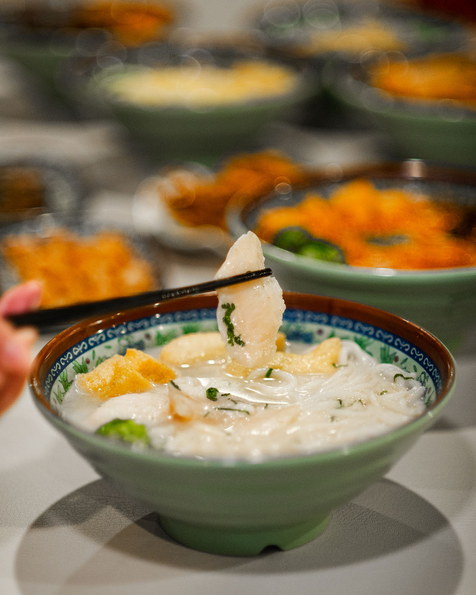

品嚐正宗麵條
您正在尋找卡加利最好的麵館嗎？走進 We Love Noodles 餐廳，享受真正愉快的用餐體驗。自成立以來，我們一直致力於提供正宗的中國麵條，將傳統風味與現代烹飪創新融為一體。
您可以透過多種方式享用“我們愛麵條”：
🍜 我們愛麵條餐廳：
在舒適溫馨的氛圍中享受全方位服務的用餐體驗。無論您喜歡堂食、外賣還是送餐，我們都保證每一碗麵條都是新鮮的，味道十足。非常適合喜歡輕鬆正宗麵條體驗的人。
🍜 我們愛麵條快餐廳：
對於忙碌的顧客，我們的快遞點提供快速外帶和送貨服務，同時不影響品質。無論您是在忙碌的一天中需要一頓令人滿意的飯菜，還是在家中需要一碗舒適的麵條，我們都能讓您隨時隨地輕鬆享用您最喜愛的美食。

肥牛螺螄粉
$13.99
微辣、中辣、辣、特辣
魚蛋螺螄粉
$13.99
微辣、中辣、辣、特辣

紅燒牛腩螺螄粉
$14.99
微辣、中辣、辣、特辣

滷豬腳螺螄粉
$14.99
微辣、中辣、辣、特辣

魚片米線（魚湯底）
$13.99

魚蛋米線（魚湯底）
$13.99
我們的故事
在 We Love Noodles，我們相信一碗麵條不僅僅是一頓飯——它是一個傳統、文化和工藝的故事。我們的餐廳受到正宗中國麵條製作技術的啟發，將手工製作的風味帶到卡加利，將豐富的傳統與現代口味融為一體。
從新鮮麵條的完美嚼勁到慢燉湯的濃鬱醇香，每一道菜都體現了品質與真實性的追求。無論您追求經典的舒適還是大膽的新口味，我們的菜單都能滿足每位麵條愛好者的需求。
加入我們，加入“我們愛麵條”，體驗美食、好夥伴帶來的溫暖，以及對麵條的熱愛——一碗一碗。
評價
"卡加利最好吃的麵條！"
"We Love Noodles 永遠不會讓人失望！湯底濃鬱，麵條新鮮，每一口都充滿風味。我每天都可以來這裡吃飯！"
— Emily W.
"正宗又美味！"
"最後，找到一個可以供應味道真正濃鬱的正宗中國麵條的地方。牛腩湯麵是我最喜歡的！"
— James L.
"麵條愛好者一定要嘗試！"
"拉麵的味道真是棒極了。您可以在每個碗中品嚐出精心的服務和品質。強烈推薦麻辣牛肉麵！"
-- Vera Z.
"舒適的氛圍，美味的食物！"
"不僅食物美味，餐廳還擁有溫馨而誘人的氛圍。這裡是享用舒適餐點的完美地點。"
— Michael M.